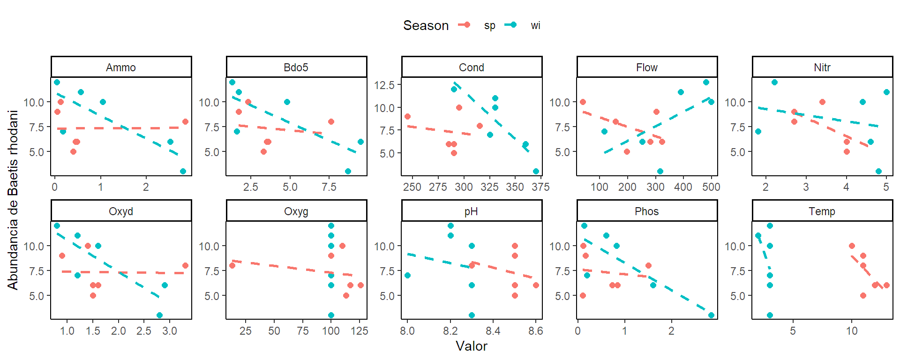

library(readxl)
library(tidyverse)
library(ggplot2)
library(psych)
library(MVN)
library(GGally)
library(ggmosaic)
library(biotools)
library(rstatix)Taller de Estudio
EXPORACIÓN DE DATOS CON RSTUDIO
1. Importación de datos.
Librerías.
Datos.
tibble [12 × 24] (S3: tbl_df/tbl/data.frame)
$ ID : chr [1:12] "sp1" "sp2" "sp3" "sp4" ...
$ Season: Factor w/ 2 levels "sp","wi": 1 1 1 1 1 1 2 2 2 2 ...
$ Site : num [1:12] 1 2 3 4 5 6 1 2 3 4 ...
$ Eda : num [1:12] 4 0 0 0 0 2 3 0 0 0 ...
$ Bsp : num [1:12] 7 0 5 3 5 7 6 3 0 6 ...
$ Brh : num [1:12] 10 8 5 6 6 9 7 6 3 10 ...
$ Bni : num [1:12] 9 0 0 0 0 4 0 0 0 0 ...
$ Bpu : num [1:12] 0 0 0 0 0 0 6 0 0 0 ...
$ Cen : num [1:12] 0 0 0 0 0 0 7 5 1 5 ...
$ Ecd : num [1:12] 0 0 0 0 5 0 0 0 0 1 ...
$ Rhi : num [1:12] 5 0 2 3 0 5 4 4 1 3 ...
$ Hla : num [1:12] 9 4 5 6 4 6 8 3 0 5 ...
$ Par : num [1:12] 4 0 0 0 0 2 4 1 0 2 ...
$ Eig : num [1:12] 0 0 0 0 4 10 0 0 0 0 ...
$ Temp : num [1:12] 10 11 11 12 13 11 3 3 3 3 ...
$ Flow : num [1:12] 41 158 198 280 322 303 118 252 315 498 ...
$ pH : num [1:12] 8.5 8.3 8.5 8.6 8.5 8.5 8 8.3 8.3 8.3 ...
$ Cond : num [1:12] 295 315 290 290 285 245 325 360 370 330 ...
$ Oxyg : num [1:12] 110 13 113 126 117 100 100 100 100 100 ...
$ Bdo5 : num [1:12] 2.3 7.6 3.3 3.5 3.6 1.7 1.6 9.5 8.7 4.8 ...
$ Oxyd : num [1:12] 1.4 3.3 1.5 1.5 1.6 0.9 1.2 2.9 2.8 1.6 ...
$ Ammo : num [1:12] 0.12 2.85 0.4 0.45 0.48 0.05 0.17 2.52 2.8 1.04 ...
$ Nitr : num [1:12] 3.4 2.7 4 4 4.6 2.7 1.8 4.6 4.8 4.4 ...
$ Phos : num [1:12] 0.11 1.5 0.1 0.73 0.84 0.16 0.19 1.6 2.85 0.82 ...2. EXPLORACIÓN NUMERICA.
PASO 5.
Usando las funciones básicas del tidyverse y/o la exploración de datos MV en RSTUDIOrealice un resumen numérico de las variables “Temp”, “pH”, “Bdo5”, “Ammo”, “Nitr” y “Phos”. La descripción debe incluir la media, la desviación estándar, la mediana, min, máx, Q1, Q3, asimetría y curtosis.
| n | Mean | Std.Dev | Median | Min | Max | 25th | 75th | Skew | Kurtosis | |
|---|---|---|---|---|---|---|---|---|---|---|
| Temp | 12 | 7.0833333 | 4.5016832 | 6.500 | 2.00 | 13.00 | 3.0000 | 11.000 | 0.0541357 | -2.0572551 |
| pH | 12 | 8.3500000 | 0.1732051 | 8.300 | 8.00 | 8.60 | 8.2750 | 8.500 | -0.3367877 | -0.9652778 |
| Bdo5 | 12 | 4.1333333 | 2.9099620 | 3.400 | 1.30 | 9.50 | 1.7000 | 5.500 | 0.7331652 | -1.1442364 |
| Ammo | 12 | 0.9566667 | 1.1023061 | 0.465 | 0.04 | 2.85 | 0.1575 | 1.410 | 0.8592538 | -1.1451665 |
| Nitr | 12 | 3.6833333 | 1.0928140 | 4.000 | 1.80 | 5.00 | 2.7000 | 4.600 | -0.3972354 | -1.5068424 |
| Phos | 12 | 0.8025000 | 0.8298973 | 0.665 | 0.10 | 2.85 | 0.1525 | 1.005 | 1.1581506 | 0.3743001 |
PASO 6.
Usando las funciones básicas del tidyverse y/o la exploración de datos MV en RSTUDIO realice un resumen numérico por época de las variables “Temp”, “pH”, “Ammo”, “Nitr” y “Phos”. La descripción debe incluir la media, la desviación estándar, la mediana, min, máx, Q1, Q3, asimetría y curtosis.
| Season | variable | M | SD | Mdn | Min | Max | Q1 | Q3 | Skew | Kurtosis |
|---|---|---|---|---|---|---|---|---|---|---|
| sp | Ammo | 0.7250000 | 1.0562717 | 0.425 | 0.05 | 2.85 | 0.1900 | 0.4725 | 1.2723708 | -0.2214051 |
| sp | Phos | 0.5733333 | 0.5592733 | 0.445 | 0.10 | 1.50 | 0.1225 | 0.8125 | 0.5167842 | -1.5204514 |
| sp | Temp | 11.3333333 | 1.0327956 | 11.000 | 10.00 | 13.00 | 11.0000 | 11.7500 | 0.3698161 | -1.3723958 |
| sp | pH | 8.4833333 | 0.0983192 | 8.500 | 8.30 | 8.60 | 8.5000 | 8.5000 | -0.7988679 | -0.6540824 |
| wi | Ammo | 1.1883333 | 1.1952643 | 0.800 | 0.04 | 2.80 | 0.2675 | 2.1500 | 0.3636762 | -1.9497135 |
| wi | Phos | 1.0316667 | 1.0374857 | 0.710 | 0.13 | 2.85 | 0.2925 | 1.4050 | 0.7128549 | -1.2398490 |
| wi | Temp | 2.8333333 | 0.4082483 | 3.000 | 2.00 | 3.00 | 3.0000 | 3.0000 | -1.3608276 | -0.0833333 |
| wi | pH | 8.2166667 | 0.1169045 | 8.250 | 8.00 | 8.30 | 8.2000 | 8.3000 | -0.8808986 | -0.9042733 |
3. EXPLORACIÓN GRÁFICA.
PASO 7.
Usando las funciones básicas para realizar exploraciones gráficas en RSTUDIO realice cada unos de los gráficos de composición de las especies (Barras y Mosaico por época; Burbujas por sitio y Bdo5)
PASO 8.
Usando las funciones básicas para realizar exploraciones gráficas en RSTUDIO realice un gráfico de dispersión por paneles de 5 columnas que muestre la relación entre las variables fisicoquímicas y la abundancia de la especie Brh separada por época.

PASO 9.
Usando las funciones básicas para realizar exploraciones gráficas en RSTUDIO realice un gráfico de matriz de dispersión de todas las variables fisicoquímicas.
PASO 10.
Usando las funciones básicas para realizar exploraciones gráficas en RSTUDIO realice un gráfico de comparación para las variables “Ammo”, “Nitr”, y “Phos” entre épocas.
PASO 11.
Usando las funciones básicas para realizar exploraciones gráficas en RSTUDIO realice un correlograma que incluya todas las variables numéricas. De preferencia el tipo 2. (Ver: Diapositivas 2. EXPLORACIÓN DE DATOS MULTIVARIADOS CON RSTUDIO)
3. VERIFICACIÓN DE SUPUESTOS.
PASO 12.
Usando las funciones básicas para realizar test de verificación de supuesto en RSTUDIO realice el test de normalidad Shapiro &Wilks para todos los factores fisicoquímicos.
| Test | Variable | Statistic | p value | Normality |
|---|---|---|---|---|
| Shapiro-Wilk | Temp | 0.7715 | 0.0045 | NO |
| Shapiro-Wilk | Flow | 0.9746 | 0.9523 | YES |
| Shapiro-Wilk | pH | 0.9128 | 0.2320 | YES |
| Shapiro-Wilk | Cond | 0.9504 | 0.6435 | YES |
| Shapiro-Wilk | Oxyg | 0.5938 | 0.0001 | NO |
| Shapiro-Wilk | Bdo5 | 0.8414 | 0.0288 | NO |
| Shapiro-Wilk | Oxyd | 0.8451 | 0.0320 | NO |
| Shapiro-Wilk | Ammo | 0.7517 | 0.0028 | NO |
| Shapiro-Wilk | Nitr | 0.9094 | 0.2096 | YES |
| Shapiro-Wilk | Phos | 0.8200 | 0.0160 | NO |
PASO 13.
Usando las funciones básicas para realizar test de verificación de supuesto en RSTUDIO realice el test de normalidad multivariada de Mardia uno con todos los factores fisicoquímicos y otro con las abundancias de las especies.
| Test | Statistic | p value | Result |
|---|---|---|---|
| Mardia Skewness | 219.872603435604 | 0.489741939396493 | YES |
| Mardia Kurtosis | -2.07677758651762 | 0.0378220918091794 | NO |
| MVN | NA | NA | NO |
| Test | Statistic | p value | Result |
|---|---|---|---|
| Mardia Skewness | 285.999999999751 | 0.488879164912178 | YES |
| Mardia Kurtosis | -2.25320284860363 | 0.0242463618842146 | NO |
| MVN | NA | NA | NO |
PASO 14.
Usando las funciones básicas para realizar test de verificación de supuesto en RSTUDIO realice el test M de box con los factores fisicoquímicos de las columnas 16,19,21,22,23.
Box's M-test for Homogeneity of Covariance Matrices
data: E[, c(16, 19, 21, 22, 23)]
Chi-Sq (approx.) = Inf, df = 15, p-value < 2.2e-16PASO 15.
Usando las funciones básicas para realizar test de verificación de supuesto en RSTUDIO realice el test esfericidad de Bartlett con todos los factores fisicoquímicos.
$chisq
[1] 123.8912
$p.value
[1] 2.681362e-09
$df
[1] 45PASO 16.
Usando las funciones básicas para realizar test de verificación de supuesto en RSTUDIO identifique si hay datos atípicos influyentes a nivel multivariado con los factores fisicoquímicos de la columna 20 a la 24 por época.
| mahal.dist | is.outlier | qchisq |
|---|---|---|
| 2.363 | FALSE | 27.8772 |
| 8.821 | FALSE | 27.8772 |
| 2.413 | FALSE | 27.8772 |
| 1.928 | FALSE | 27.8772 |
| 3.803 | FALSE | 27.8772 |
| 2.165 | FALSE | 27.8772 |
| 3.457 | FALSE | 27.8772 |
| 6.562 | FALSE | 27.8772 |
| 8.251 | FALSE | 27.8772 |
| 2.528 | FALSE | 27.8772 |
| 8.654 | FALSE | 27.8772 |
| 4.056 | FALSE | 27.8772 |